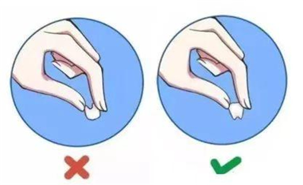

学院通知 · 教学通知
这份牙外伤“应急处置+预防”攻略，请查收！
发布时间：2026/06/10
摔倒、运动撞击……一不小心，牙齿也可能会“受伤”！ 青少年及运动人群为高发群体。牙齿兼具咀嚼、发音功能及颜面美观，外伤后若处置不当，可能会导致牙脱位、牙髓坏死等不可逆损伤。因此，掌握牙外伤的应急处置和科学防护技能，至关重要。 一、黄金“应急处置”四步法：捡、洗、存、救 牙齿外伤后，黄金应急处置时间仅 60分钟，掌握正确“捡-洗-存-救”四步骤，能大幅提升牙齿留存率。 第一步“捡” 找到“出逃”的牙齿并捡起。只捏牙冠，不碰牙根。 第二步“洗” 用生理盐水或自来水轻柔冲洗5-10秒！避免刷洗、揉搓！ 第三步“存” 轻轻放回牙槽窝（前提是清洁无污染）、含在舌下、泡牛奶浴或生理盐水。 第四步“救” 黄金60分钟，立即前往附近医院就诊! 二、科学预防：远离牙外伤，筑牢防护线 80%的牙外伤都能通过预防避免，尤其针对高发人群（儿童和青少年），做好日常防护，能有效降低受伤概率： 1.专业定制牙托—高危运动防护新选择 篮球、足球等高强度对抗运动中，专业定制牙托兼具酷炫外观与舒适贴合双重优势。配合头盔使用，可有效分散冲击力，为上颌骨及颞下颌关节提供针对性保护，实现运动表现与安全防护的完美结合。 2.远离这些隐藏雷区 ●含着棒棒糖/筷子/铅笔跑跳 ● 在走廊追逐打闹 ● 用牙齿开酒瓶、咬坚果壳、撕包装袋 3.特殊人群重点防护 ● 儿童：监护人要看护好，家具棱角包软包，玩具避免尖锐角 ● 青少年：天天运动身体好，安全意识要记牢，运动护具不能 ● 老年人：浴室防滑要做好，湿滑地面风险高，扶手安装很重要
